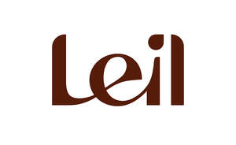

Trade Mark Journal No.2025/032 8 August 2025
UK00004240593 28 July 2025 (11,19,20,24,25,37)

- Class 11
- Steam baths, saunas and spas; sauna heaters; sauna apparatus; prefabricated saunas; sauna modules; sauna cabins; sauna bath installations; sauna heaters; sauna rocks; apparatus for heating saunas; infrared sauna cabins; control panels and automation equipment for saunas; steam generators for steam rooms; light sources [other than for photographic or medical use]; lighting for saunas; ventilating installations; bath fittings.
- Class 19
- Materials, not of metal, for construction; buildings, not of metal; buildings, transportable, not of metal; transportable or stationary sauna cabins; prefabricated houses [ready-to-assemble], not of metal; finishing materials for saunas; building materials, not of metal; interior panels for saunas, not of metal; glass walls and doors for saunas with frames not of metal; roofing and wall materials for saunas, not of metal; fasteners and mouldings, not of metal; sauna accessories, not of metal.
- Class 20
- Furniture for saunas; sauna benches, not of metal; benches, chairs and loungers made of wood; headrests, footrests and other accessories, not of metal; wooden racks [furniture]; decorations, including sculptures, made primarily of wood, straw, bone, shell, wax, resin, plastics or plaster, or of substitutes for these.
- Class 24
- Linens; bath sheets; Turkish towel; children's towels; seat cushions and sauna bench covers; blankets and throws; textile sauna bags; heat-resistant fabrics; coverings for furniture; bath mitts; cloths of non-woven textile material for washing the body [other than for medical use]; cloths of woven textile material for washing the body [other than for medical use].
- Class 25
- Clothing, footwear, headgear; sauna wear; bath robes; slippers and flip-flops; bath sandals; sauna hats; swimwear, swim shorts, bikinis, bathing suits.
- Class 37
- Construction services; installation and repair services; construction and repair services for buildings and other structures; advisory services relating to the construction of buildings and other structures; erection of pre-fabricated buildings; construction, installation, repair, maintenance and servicing of saunas; custom construction of sauna buildings; renovation and restoration of saunas; installation, maintenance and repair of electric sauna heaters and control systems. .
Compact Home OÜ
Representative: Shoosmiths LLP